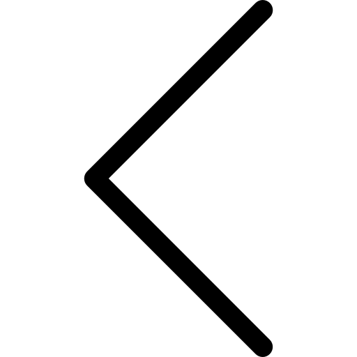
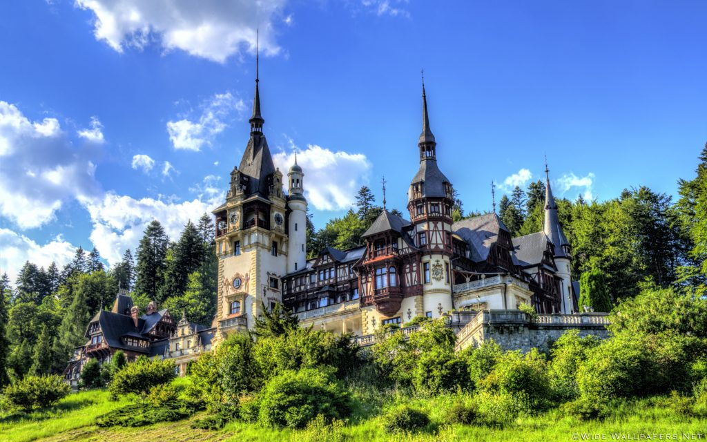
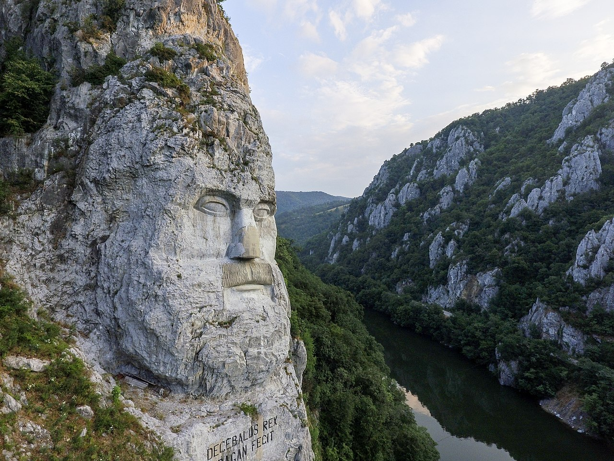
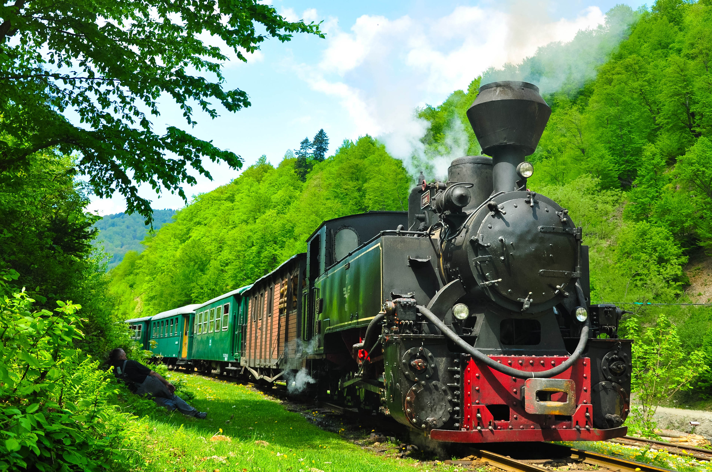
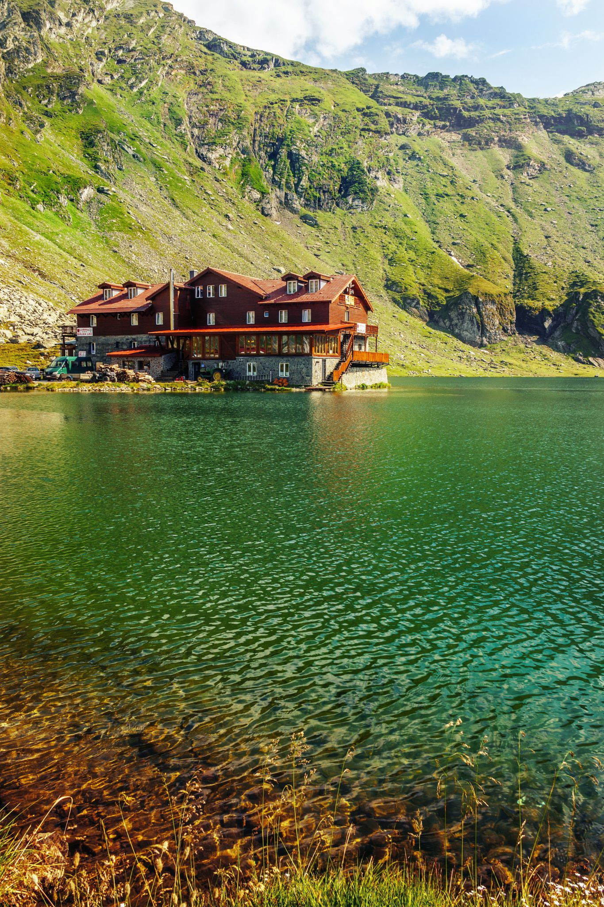
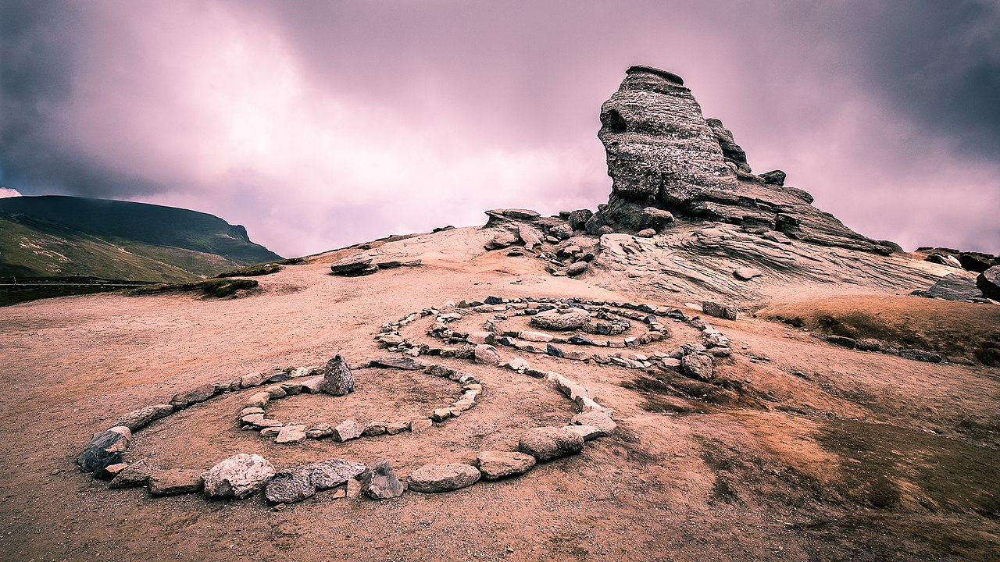
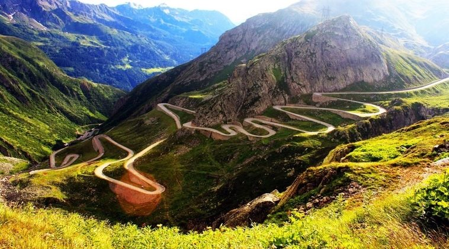

Descopera
Romania
Incepe Calatoria
Exploreaza cateva din cele mai frumoase locuri din Europa
România este tara care îti pune la dispozitie o multime de atractii turistice. Destinatii în care vei vedea cascade spectaculoase, palate de poveste, saline impresionante si peisaje ce te vor lasa fara suflare.
Mai multe destinatii turistice de poveste


Castelul Peles

Capul lui Decebal

Mocanita

Salina Turda

Lacul Balea

Sfinxul

Transalpina